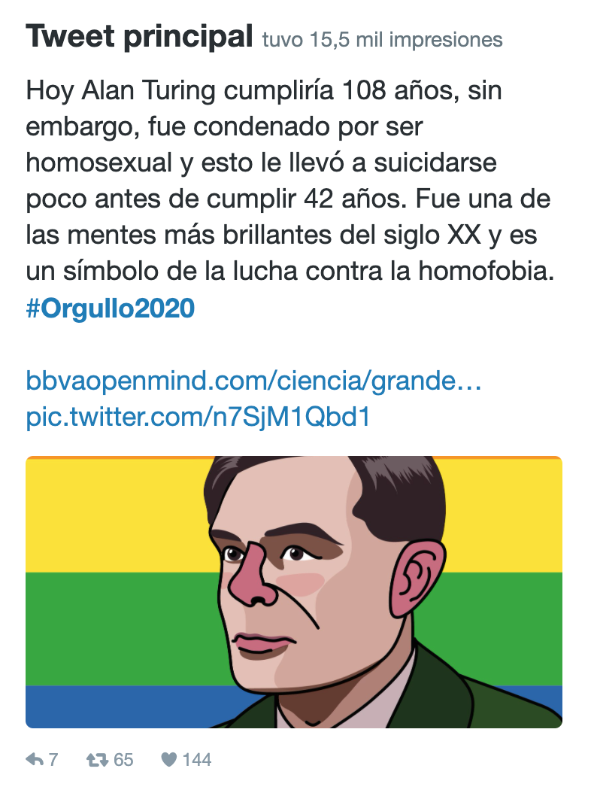

Impacto de las redes sociales de la SEMA durante su primer año
Daniel Acosta Soba, J. Rafael Rodríguez Galván
Universidad de Cádiz
En diciembre de 2020 se cumplía un año desde de la creación de las redes sociales (RRSS) de la SEMA. Tras este primer año de existencia nos planteamos analizar el impacto que estas han tenido en el marco del proyecto para difundir y modernizar la imagen de la Sociedad que comenzó en el curso 2018/2019 con iniciativas como la actualización del Boletín Electrónico, disponible en formato navegable, y la creación de su formato digital.
Para estudiar la evolución en el impacto de las RRSS nos fijaremos en la red social donde se han centrado muchos de los esfuerzos por parte del grupo de colaboradores: Twitter. Para ello, mostraremos a continuación varias estimaciones que nos proporciona la herramienta Twitter Analytics y las agruparemos en periodos de dos meses con el propósito de analizar su progreso. En una sección posterior se darán algunos detalles sobre las otras redes sociales en las que la sociedad tiene un perfil, Instagram y Facebook.
Durante los dos primeros meses (desde el 16 de diciembre de 2019, fecha de la primera publicación) se publicaron 59 tweets que supusieron los primeros pasos en la andadura de la SEMA por las RRSS. Estos tweets atrajeron 991 visitas al perfil de la Sociedad y se consiguieron los primeros 104 seguidores.
Los tweets alcanzaron un total de 35.100 impresiones, visualizaciones, durante estos 47 días (747 impresiones por día), un mayor detalle se puede observar en la figura 2. Además, se produjeron unas 1230 interacciones con los tweets, entre las que se encuentran 277 clicks en los enlaces, 124 retweets y 252 «me gusta».
Los siguientes dos meses, coincidiendo con el comienzo de la pandemia del COVID-19, supusieron un notable crecimiento en la difusión de las publicaciones y del perfil de la Sociedad. Durante este periodo se hizo un esfuerzo notable por difundir el Día Internacional de las Matemáticas y por aportar nuestro granito de arena en la lucha contra el virus que se hizo notable en el número de tweets publicados, 174 tweets, casi el triple que en el periodo anterior. Se acumularon 1701 visitas al perfil de la Sociedad y se consiguieron 128 seguidores.
Los tweets alcanzaron la importante cifra de 108.200 impresiones durante estos 60 días (1.800 impresiones por día), estos datos se detallan en la figura 3. Además, se produjeron unas 2920 interacciones con los tweets, el doble que en el anterior periodo, entre las que se encuentran 624 clicks en los enlaces, 424 retweets y 720 «me gusta».
El siguiente periodo fue una etapa de estabilización en la que se mantuvieron las cifras del periodo anterior. Los 109 tweets publicados atrajeron 1763 visitas al perfil de la Sociedad y se consiguieron 101 seguidores.
Los tweets alcanzaron un total de 96.800 impresiones durante estos 61 días (1.600 impresiones por día) como se puede observar, de manera detallada, en la figura 4. Además, se produjeron unas 2710 interacciones con los tweets, entre las que se encuentran 519 clicks en los enlaces, 247 retweets y 457 «me gusta».
Durante la primera parte del verano realizamos un nuevo esfuerzo por mantener el ritmo de publicación y se publicaron 95 tweets que atrajeron 1397 visitas al perfil de la Sociedad y se consiguieron los primeros 110 seguidores.
|
|  |
Figura 6: Tweet dedicado
a Alan Turing 1 |
Los tweets alcanzaron un total de 103.100 impresiones durante estos 61 días (1.700 impresiones por día), que se detallan en la figura 5. Además, se produjeron unas 2990 interacciones con los tweets, entre las que se encuentran 414 clicks en los enlaces, 328 retweets y 785 «me gusta». Asimismo, durante este periodo se publicó el tweet (figura 6) que ha causado un mayor impacto hasta la actualidad, con más de 16.000 impresiones y más de 2000 interacciones.
La segunda parte del verano y las vacaciones se dejaron notar: con un número de publicaciones de 72 tweets durante este periodo, las visitas al perfil decayeron a 666, la mitad que en el periodo anterior. De la misma forma, el número de nuevos seguidores bajó prácticamente a la mitad del periodo anterior con un total de 61 seguidores.
Los tweets alcanzaron un total de 63.600 impresiones durante estos 61 días (unas 1.000 impresiones por día) como se observa en la figura 7. Además, se produjeron unas 1780 interacciones con los tweets, entre las que se encuentran 466 clicks en los enlaces, 177 retweets y 418 «me gusta».
Tras el verano y con el nuevo curso académico en marcha, se mantuvo el número de publicaciones con 76 nuevos tweets a la vez que las visitas al perfil crecen notablemente hasta 1.922, el triple que en el periodo anterior y un número superior al de los periodos anteriores de gran impacto (Febrero-Marzo y Abril-Mayo). Asimismo, el número de nuevos seguidores aumenta notablemente hasta 94 seguidores.
La repercusión de los tweets volvieron de nuevo a la normalidad con 98.300 impresiones durante estos 61 días (unas 1.600 impresiones por día) que se detallan en la figura 8. No obstante, las interacciones aumentaron durante este periodo y se situaron en valores superiores a los de los periodos anteriores con unas 3150 interacciones. Estas interacciones incluyen 658 clicks en los enlaces, 309 retweets y 650 «me gusta».
En nuestro perfil de mayor actividad, Twitter, se han producido durante el último periodo (desde diciembre de 2020 hasta el 21 de enero de 2021) un total de 55 publicaciones, 4358 visitas al perfil, 106 nuevos seguidores. Asimismo, este último mes y medio han tenido lugar unas 69.000 impresiones de los tweets publicados (1.300 impresiones por día) y unas 2.070 interacciones que se detallan en las figuras 9 y 10. Estos números nos indican un notable nuevo crecimiento del perfil de la Sociedad en Twitter un año después de su creación, doblando las cifras de visitas al perfil con respecto al periodo anterior.
Esta red social es la que ha presentado un mayor crecimiento, alcanzándose en tan solo 13 meses la cifra actual de seguidores que supera los 750. Entre estos seguidores se encuentran numerosos perfiles de relevancia en el mundo científico, entes públicos y, por supuesto, nuestros socios, además de otras personas y organizaciones interesadas en los contenidos que a diario se publican en nuestro perfil.
Asimismo, hasta la fecha del 21 de enero de 2021 se han acumulado más de medio millón de impresiones y más de 16.000 interacciones en las 640 publicaciones realizadas (además de otros cientos de publicaciones relevantes realizadas por otros perfiles que hemos compartido). Además, se han obtenido unas 12.798 visitas al perfil de la Sociedad.
En la figura 11 se puede comprobar la evolución de varios de los indicadores que hemos estado mencionando anteriormente a lo largo de los distintos periodos.
El perfil de Instagram de la Sociedad también ha tenido una buena acogida alcanzando en la actualidad más de 170 seguidores, una cifra que creemos que es bastante buena teniendo en cuenta que Instagram se trata de una red social orientada a un público más joven que quizá sea más difícil de atraer a través de los contenidos del perfil. En tan solo un año se han realizado más de 336 publicaciones que han superado las 1.000 interacciones.
Por último, el perfil de Facebook es el que ha tenido un menor impacto desde su creación con 50 seguidores. Durante este periodo se han realizado más de 355 publicaciones y se han alcanzado 39 «me gusta» en el perfil.
En la figura 12 se muestran las publicaciones con mayor repercusión en los perfiles de Instagram y de Facebook de la Sociedad.
En definitiva, desde el grupo de colaboradores de las RRSS de la SEMA creemos que el balance del primer año ha sido, en general, muy positivo. Hemos superado las dificultades de los inicios del proyecto y hemos logrado dar los primeros pasos firmes en esta andadura que no ha hecho más que comenzar.
Actualmente seguimos con un ritmo de al menos una publicación diaria en Twitter y prácticamente diaria en Facebook e Instagram. Asimismo, nos comprometemos a aumentar el esfuerzo y la dedicación en momentos de interés para la Sociedad (anuncios importantes, fechas señaladas, etc.) como así hemos hecho durante todo este primer año.
No obstante, queremos transmitiros nuestra firme voluntad por continuar mejorando y adaptándonos a los nuevos tiempos cada vez con mayor velocidad. Con este propósito nos gustaría contar con vuestra opinión y sugerencias, que podéis transmitirnos directamente a través de cualquiera de los perfiles de la Sociedad o a través de la cuenta de correo rrss@sema.org.es.
Por último, daros las gracias por vuestro apoyo incondicional desde el primer día y animaros a continuar siguiendo a SEMA en las RRSS de las que seáis usuarios, así como participando y disfrutando con el contenido publicado, que esperamos sea de interés para todos y cada uno de vosotros.
1.Alan Turing consiguió descifrar la máquina Enigma usada por la Alemania nazi, descubrimiento que propició el fin prematuro de la II Guerra Mundial. La repercusión de sus hallazgos le llevaron a recibir un indulto póstumo por parte de la Casa Real británica 61 años después de su condena.